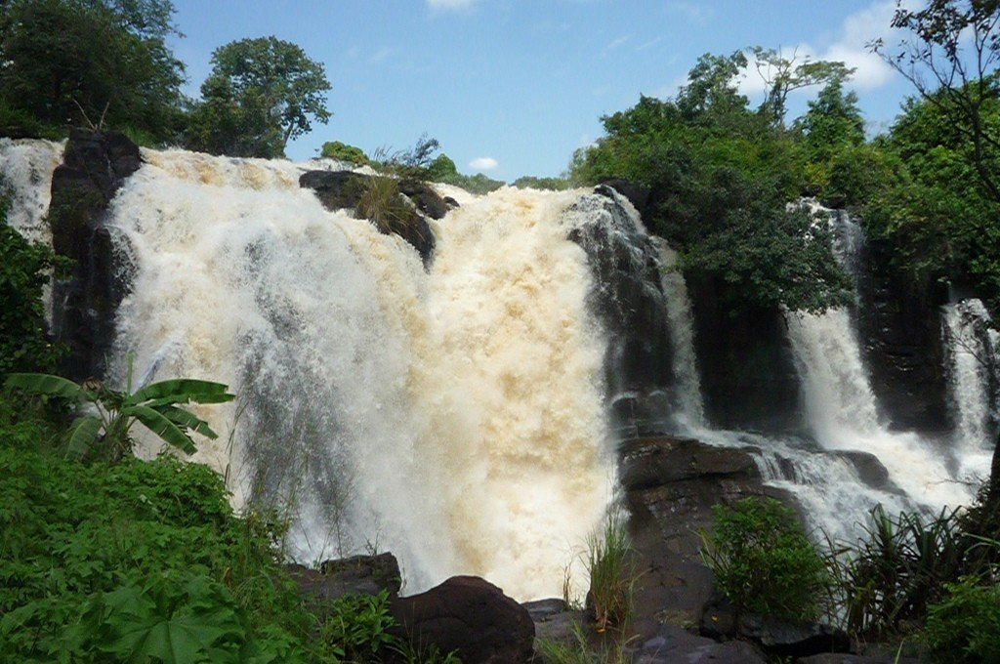

×

Central African Republic
Происхождение названия
В колониальный период владение Франции носило название Убанги-Шари от гидронимов рек Убанги и Шари, впадающей в озеро Чад. После провозглашения независимости в 1960 году страна получила название «Центральноафриканская Республика» по своему географическому положению.
История
Древнейшая история народов Центральноафриканской Республики мало изучена.
Район современной территории Центральноафриканской Республики оказался между сильным феодальным государством Канем-Борно на севере (образовалось в XV веке на западном берегу озера Чад) и христианским королевством Конго на юге (сложилось в XIV веке в низовьях реки Конго), которые имели тесные торговые связи.
На территории Центральноафриканской Республики находилось государство Гаога.
Территория Центральноафриканской Республики была заселёна местными убангийскими племенами: гбанзири, бурака, санго, якома и нзакара.
Обширные области в районе притоков Шари — Аук и Азум были заняты племенами гула, которые занимались рыболовством и торговлей.
Европейцы (французы и бельгийцы) начали появляться здесь в 1884—1885 годах.
3 августа 1960 Центральноафриканская Республика провозглашена независимым государством.
1 января 1966 произошёл военный переворот.
Правительство и политика
На данный момент действующий президент страны — Туадера, Фостен-Арканж (с 30 марта 2016).
Данные: Дата рождения 21 апреля 1957 . Место рождения Банги, Убанги-Шари, Французская Экваториальная Африка.
На данный момент действующий премьер-министр страны - Нгребада, Фирмен (с 25 февраля 2019).
Данные: Дата рождения 24 мая 1968 . Место рождения Банги, ЦАР.
Праздники
| Дата | Праздник | Примечание |
|---|
| 1 января | Новый год | Начало календарного года |
| 29 марта | День Боганда | День Боганда |
| 1 мая | День рабочего | В честь всех рабочих |
| 30 июня | День Общей Молитвы | День Общей Молитвы |
| 13 августа | День независимости | День независимости |
| 15 августа | Вознесение Девы Марии | Вознесение Девы Марии |
| 1 ноября | День Всех Святых | День Всех Святых |
| 25 декабря | Рождество | Празднование Рождества |
____